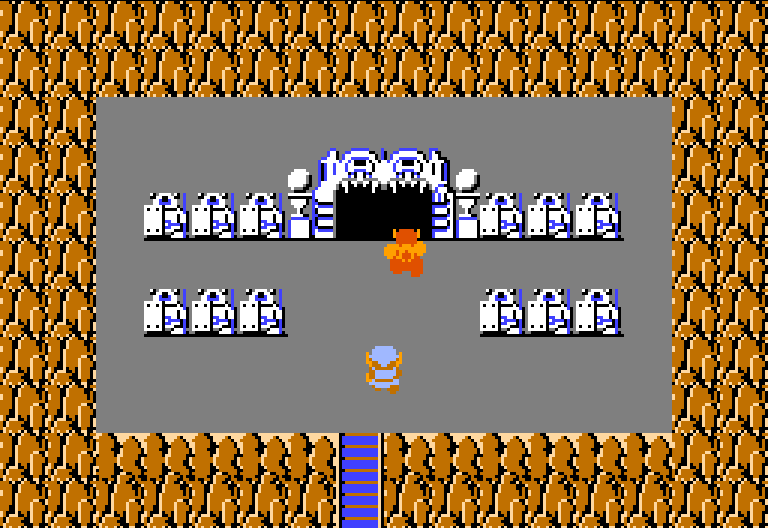
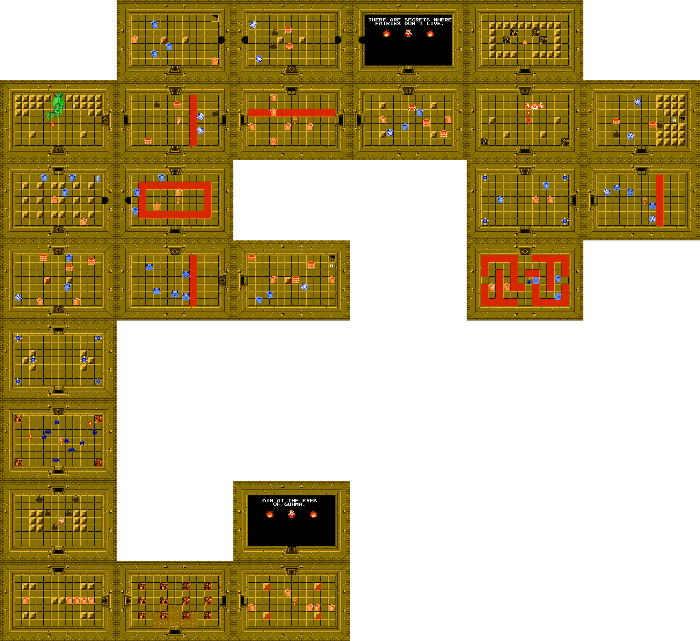
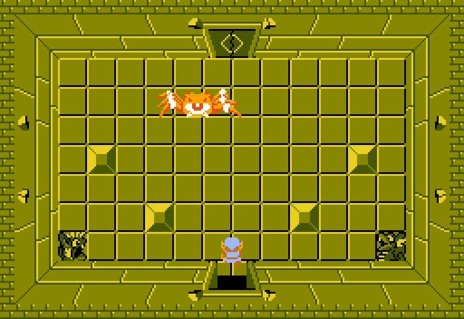

Location and How to Get There
This level is found right next to the graveyard.
It is pretty far away from the starting square, in a more difficult to get to area in the overworld.
{kind=link}

The Layout
It is shaped like a Dragon.
This is where the levels start to get really big, with a lot of rooms.
{kind=link}

Key Items
| Item | Description | Image |
|---|---|---|
| The Magic Wand |
A very useful item! It has infinite ammo, so you can perform attacks without being at full health to do sword beams, or having to burn your rupees for the bow. |
{kind=link}
The Boss, Gohma
A big spider with a single eye.
It closes and opens its eye while moving around, you need to time an arrow shot into its eye to defeat it.
Pretty easy boss overall.
{kind=link}

Difficulty
10/10 The most difficult level in my opinion, after the final level.
It has the toughest enemies in the game, Wizzrobes.
Not only that, it has a LOT of them.
This mixed with the dungeon being huge, and the enemies respawning, and you being sent back to the start of the level with each death makes the difficulty very hard.
Funnily enough the boss is one of the easiest parts of this level.
My Rating
6/10. An okay level, the huge difficulty spike makes it annoying to me, with both level 7, 8 and arguably even 9 being easier makes it be in a strange spot.
Other than that the dark yellow color scheme mixed with lava looks fine.
The Magic Wand you unlock here is very handy.